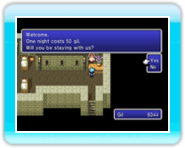

13 |
The Field Map |
 |
● Viewing the Field MapUse 
● Talk / SearchIf you want to talk to someone or examine an object, go up to it and press 
● Save PointsYou will find save points inside towns and dungeons. You can save your game (→ P. 11) and use tents or cottages to rest your party when standing on top of a save point.

● Inns
|
● TransportationAs you progress, you will acquire assorted modes of transportation to help you get around the field map:
|
||||||||
 |
 |